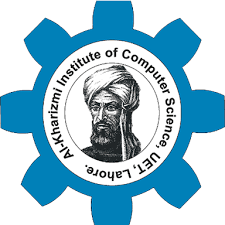

Introduction
I am a performance-oriented professional with more than nine (9) years of experience of research, design and development in the AI fields (speech and natural language processing). I have worked on speech recognition, spoken dialog and natural language processing systems. I have also worked on a diverse set of problems involving Syntactic Processing, Semantic Parsing, Context-Free Grammars, Informational Retrieval, Speech Emotion Recognition, and Natural Language Understanding.
Current/Past Affiliations

KICS